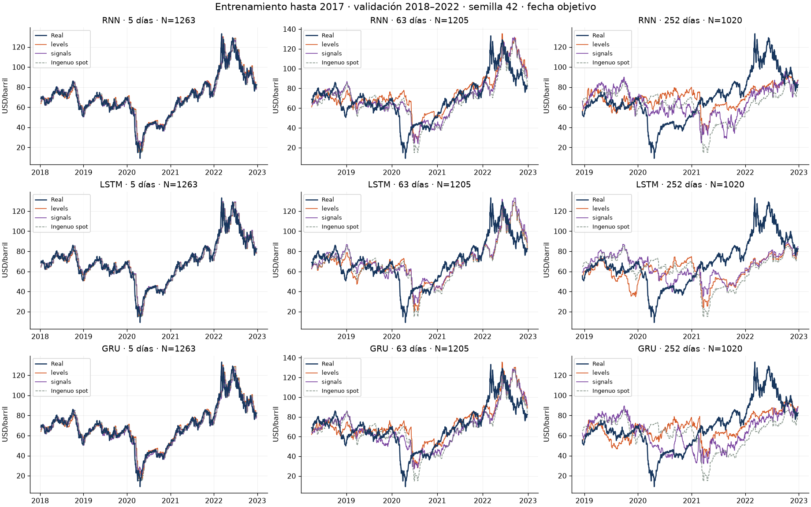
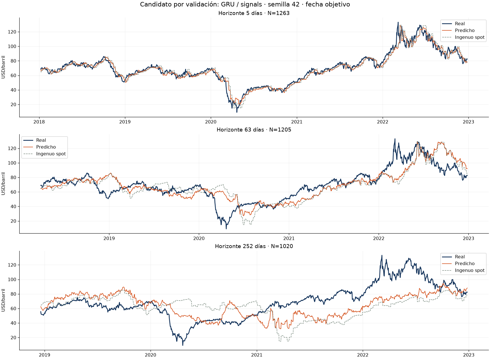
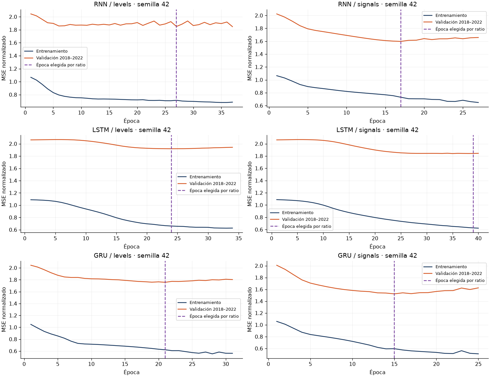

Entrenamiento hasta 2017 · validación 2018–2022
18 ajustes completados en 257.4 segundos acumulados de entrenamiento en CPU. Un ajuste por arquitectura, variante y semilla; los mismos pesos se usan para todos los años. Máximo 40 épocas, paciencia 10. No se ha ejecutado una nueva búsqueda de Optuna.
Estas métricas pertenecen a la validación usada para seleccionar la época y comparar candidatos; no son resultados de un test independiente. El test 2023–2024 sigue reservado. Las cifras son medias de métricas de tres semillas, no métricas de una predicción promediada.
Las figuras representan cada predicción en su fecha objetivo. Cada punto procede de un origen distinto; no es una única trayectoria recursiva. Semilla 42 en las figuras.
Métricas de validación
| Red | Entradas | Horizonte | N | MAE | MSE | RMSE | R² | Ratio spot | Ratio futuros |
|---|---|---|---|---|---|---|---|---|---|
| GRU | levels | 5 | 1263 | 3.985 | 33.063 | 5.750 | 0.926 | 1.008 | 1.197 |
| GRU | levels | 63 | 1205 | 10.432 | 234.405 | 15.308 | 0.500 | 0.958 | 1.032 |
| GRU | levels | 252 | 1020 | 15.723 | 372.968 | 19.312 | 0.313 | 0.700 | 0.717 |
| GRU | signals | 5 | 1263 | 3.575 | 24.870 | 4.987 | 0.944 | 0.874 | 1.038 |
| GRU | signals | 63 | 1205 | 10.565 | 211.115 | 14.526 | 0.549 | 0.909 | 0.979 |
| GRU | signals | 252 | 1020 | 17.331 | 437.344 | 20.909 | 0.195 | 0.758 | 0.776 |
| LSTM | levels | 5 | 1263 | 3.989 | 32.312 | 5.684 | 0.928 | 0.997 | 1.183 |
| LSTM | levels | 63 | 1205 | 11.304 | 245.929 | 15.682 | 0.475 | 0.981 | 1.057 |
| LSTM | levels | 252 | 1020 | 20.671 | 607.637 | 24.649 | -0.119 | 0.894 | 0.915 |
| LSTM | signals | 5 | 1263 | 4.016 | 32.703 | 5.719 | 0.927 | 1.003 | 1.190 |
| LSTM | signals | 63 | 1205 | 11.242 | 243.730 | 15.609 | 0.480 | 0.976 | 1.052 |
| LSTM | signals | 252 | 1020 | 19.858 | 582.162 | 23.990 | -0.072 | 0.870 | 0.891 |
| RNN | levels | 5 | 1263 | 3.967 | 32.433 | 5.695 | 0.928 | 0.999 | 1.185 |
| RNN | levels | 63 | 1205 | 10.540 | 237.073 | 15.396 | 0.494 | 0.963 | 1.038 |
| RNN | levels | 252 | 1020 | 17.081 | 446.565 | 21.126 | 0.178 | 0.766 | 0.784 |
| RNN | signals | 5 | 1263 | 3.488 | 24.184 | 4.918 | 0.946 | 0.862 | 1.024 |
| RNN | signals | 63 | 1205 | 10.573 | 214.780 | 14.654 | 0.541 | 0.917 | 0.988 |
| RNN | signals | 252 | 1020 | 19.261 | 523.984 | 22.890 | 0.035 | 0.830 | 0.850 |
MAE y RMSE en USD/barril; MSE en (USD/barril)². Ratios frente al último spot publicado y al último cierre de futuros conocido; no representan una estrategia de inversión.
Sobreajuste
La regla diagnóstica detecta señal de sobreajuste en 5 de 18 ajustes: la pérdida de entrenamiento baja y el ratio de validación empeora más del 2% desde la época elegida hasta el final. Se conservan los pesos de la época elegida. Este indicador no demuestra que el sobreajuste esté eliminado; las diferencias de régimen entre 2012–2017 y 2018–2022 también afectan a las pérdidas.
Comparación de todas las redes y horizontes

Precio real y predicho del candidato con menor ratio medio

Pérdida de entrenamiento y validación
